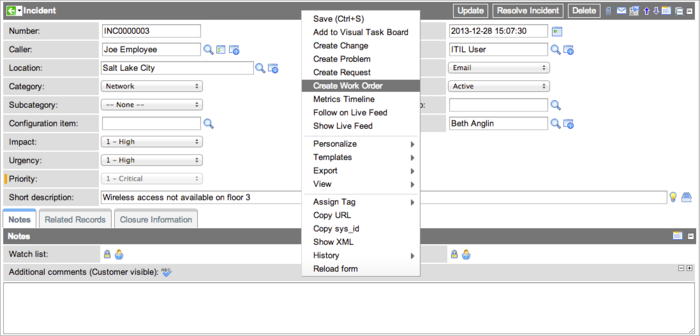

Managing Work Orders - Versions Prior to Fuji
Contents
1 Overview
Work management involves creating, qualifying, dispatching, and executing requests for off-site work, called work orders. The steps and functions of the work order life cycle work together to ensure that off-site issues are resolved in the most efficient manner possible. Users with the appropriate roles create the work orders and provide all the necessary information needed for the work order tasks. Other users qualify those work orders and create the tasks necessary to complete the work order.
This page discusses the procedures for creating and qualifying work orders. For information about managing tasks, see Work Order Tasks. To understand how tasks are eventually dispatched, see Dispatching Work Order Tasks. For instructions on how to dispatch tasks using geolocation with Google Maps, see Using the Dispatch Map.
| |
Note: References to Work Management indicate that the information on this page is valid for ServiceNow versions prior to Fuji. In the Fuji release, Work Management was renamed Field Service Management. |
2 Creating a Work Order
Creating a work order involves gathering the initial information about the work that needs to be done. Users with the wm_initiator and wm_initiator_qualifier roles can create work orders. In the Draft stage, the initiator or initiator-qualifier determines the nature of the problem driving the call and identifies the configuration items affected. To create work orders for common tasks such as the onboarding of new employees, you can use work order model templates to create all the necessary records automatically.
To create a work order manually:
- Navigate to Work Management > Work Order > Create New.
- Enter a Short Description.
- Fill in the fields, as appropriate (see table).
- Click the appropriate button:
- Submit: saves the work order in Draft state so more information can be added at a later time. Work orders submitted by a user with the wm_qualifier role are automatically set to Ready for Qualification.
- Ready For Qualification: automatically creates an initial work order task if one does not exist. The work order Short description, Description, and Location are copied into the work order task. This button is not available if automatic qualification is configured (starting with the Eureka release).
| Field | Description |
|---|---|
| Number | Auto-generated identification number for the work order. |
| Company | Company for which the work order was opened. The lookup list shows only those companies designated as Customers in their company record. This field is not visible to users with the wm_initiator role. |
| Caller | Person for whom the work needs to be performed. The lookup list shows only users associated with the selected Company. |
| Affected CI | Primary item that requires work, such as a broken laptop or a printer that needs ink. Configuration Item lookup lists are based on the selected Company. (If more than one item requires work, refer to the Affected CIs related list.) |
| Location | Geographical area where the work needs to be done. If not entered manually, ServiceNow completes this field automatically based first on the Affected CI field and then, if no affected CI or location is provided, on the Caller. |
| Template | Work order model to use as a template for this work order. The system uses information from the selected template to complete the work order fields, create tasks required by the template, and add any part requirements specified. For details about creating models and using them as templates, see Work Order Models. |
| Opened | Date and time the work order was opened. |
| Priority | Precedence of the work order. This value is based on severity of the impact, number of users affected, or other factors. The SLA applied to this work order is determined by the priority selected in this field. |
| State | Current stage of the work order in the work order life cycle. |
| Qualification group | Group that can specify the technical details of the work order. The lookup list shows only the qualification groups associated with the selected Location. If no qualification groups exist for the location, all qualification groups are listed and any can be selected. This field is hidden when work management is configured for automatic qualification, an option available starting with the Eureka release. |
| Initiated from | Original record number of the problem, incident, change request, or other work order from which the work order was created. |
| Billable | Option for issuing a statement of fees or charges for the work order. This is useful for running reports on billable work orders. |
| Short Description | Brief explanation of the work order. |
| Description | Detailed information describing the work to be performed, based on the Short Description and other available details. Initiators create work orders, but qualifiers should add as much detail about the work to be performed as possible to avoid extra communication with the caller in later stages of the work order life cycle. |
| Work Notes | Information about the work order and how the work order was completed. This field is not visible to customers. Work notes are added throughout the work order life cycle by users involved in the process. This helps the users communicate useful information to one another. |
2.1 Creating a Work Order from an Incident, Problem, or Change
You can create a work order directly from an incident, problem, or change record. This is useful if one of these tasks requires work that must be assigned to an offsite agent and tracked. Some information from the original record is copied into the new work order automatically.
| Record type | Fields automatically filled in |
|---|---|
| Incident |
|
| Problem |
|
| Change |
|
To create a work order from an incident, problem, or change:
- Navigate to the incident, problem, or change record.
- Right-click the header and select Create Work Order.
- 
- ServiceNow creates a new work order in Draft stage, using the short description of the incident as the short description of the work order.
- Fill in the fields, as appropriate.
- Select a template from a work order model if your organization has created one for commonly performed tasks.
- ServiceNow automatically creates a task from the work task model and any part requirements specified in the template.
- Click Update.
2.2 Creating a Work Order From an Existing Work Order
You can create a new work order from an existing work order. This is useful if the scope of a work order changes during the execution phase and it becomes necessary to create another work order. Analyze if the scope change can be managed by adding additional tasks instead of creating another work order. Also, because some information is copied over from the original record, an existing work order can be used as a template to create new work orders.
The following information is copied from the original record:
- Work order record reference (in the Initiated from field)
- Affected CI
- Caller
- Location
- Priority
- Short description
- Description
To create a work order from an existing work order:
- Navigate to the original work order.
- Right-click the header and select Create Work Order.
- ServiceNow creates a new work order in Draft stage.
- Enter a Short description if one was not added automatically.
- Fill in the fields, as appropriate.
- Click Update.
3 Associating CIs to Work Orders and Work Order Tasks
The initiator usually specifies the configuration items for work orders and work order tasks. CIs on the work order:
- Give qualifiers an overview of all the work that needs to be done.
- Provide important information for the agents completing the individual tasks.
When assigning CIs to individual tasks, the qualifier and dispatcher can only choose from the CIs in the Work Order Affected CIs related list. The same CI in a work order can be applied to multiple work order tasks.
4 Qualifying Work Orders
In the basic work management system, a user with the wm_qualifier, wm_initiator_qualifier, or wm_initiator_qualifier_dispatcher role selects the dispatch group, adds work order tasks, and defines part requirements. The work.management.limit.location property controls whether the choice list of available dispatch groups is filtered by proximity to the task location. The qualifier can add the Affected CI, Short Description, and Description to a work order if the initiator did not provide complete information. Qualification can be manual or automatic. You can configure ServiceNow to promote the work order from Draft directly to Qualified without the qualification stage. When you are using manual qualification, a work order cannot advance to the Qualified state until all its tasks are qualified.
4.1 Qualifying Tasks
To qualify a task, open it from the Work Order Tasks related list, select a Dispatch group, and then click Qualified. To qualify multiple tasks at once, select the check boxes beside the tasks you want to qualify in the related list, and then select Qualified from the Actions choice list. Qualifying multiple tasks from the list is available starting with the Eureka release.
4.2 Automatic Qualification
Users with the admin or wm_admin role can configure work management to skip the Awaiting Qualification state for work orders and automatically advance them to Qualified (starting with the Eureka release). When a work order is qualified automatically, the system also creates a task in the Draft state. No qualification group is required for work orders configured in this manner, so the Qualification group field is hidden in the Work Order form. In the application navigator, the Awaiting Qualification module is replaced by the My Work Order Tasks module. This module is accessible to users with the wm_initiator_qualifier role and shows only those tasks created by the current user.
4.2.1 Setup
Log in as an admin or wm_admin user and configure the following:
- Navigate to Work Management > Administration > Work Management Properties and clear the check box for the Include a qualification stage for work order tasks property. This setting eliminates the qualification stage.
- Navigate to User Administration > Users and grant the wm_initiator_qualifier role to all users who can create and qualify work orders in a single step.
4.2.2 Promoting Tasks in Draft State
When a user with the wm_initiator_qualifier role creates a work order that is qualified automatically, the work order state progresses from Draft to Qualified and the system automatically creates a task in the Draft state. This user can then promote the draft tasks to a state of Pending Dispatch.
- Navigate to Work Management > Work Order > My Work Order Tasks.
- This list is filtered to show tasks in the Draft state created by the current user.
- Open a task.
- Make sure the task has a Dispatch group.
- Click Ready for Dispatch.
- This promotes the task to the Pending Dispatch state.
You can promote multiple tasks to Ready for Dispatch at once from a related list or a task list. Select the check boxes of the tasks you want to promote and select Ready for Dispatch from the Actions choice list.
4.3 Automatically Dispatching Tasks at Qualification
Users with the wm_qualifier and wm_initiator_qualifier roles can dispatch a task automatically at qualification by assigning it to a dispatch group when the Requests are dispatched via auto-assignment option is set in Work Management Configuration (starting with the [[Fuji_Release_Notes|Fuli release).
- Open a work order that is in the Awaiting Qualification state or one that has been qualified automatically.
- Open a task in the Draft state.
- Select a Dispatch group.
- Enter a location if the Location should be used property is turned on.
- When the Location should be used property is turned on, auto-dispatch will fail unless the task contains a valid location.
- In the Planned section, create a schedule for this task or let ServiceNow determine the times. For instructions, see Creating Work Order Tasks.
- By default, ServiceNow enters the current date and time in the Window start field. If you do not create a schedule or a fixed window, ServiceNow uses the Window start value to look for an agent who has that time slot open.
- Click Qualified.
- The view returns to the previous page, and a success message appears. The system assigns an agent to the task, enters the agent's assignment group in the task record, and moves the state to Assigned.

- If auto-dispatch fails, the message indicates either that no agent was available or that the task did not specify a location. The system moves tasks that fail auto-dispatch to the Remain in the Pending Dispatch state.
- To auto-dispatch a task that failed previously, enter any missing information or change the schedule, and then click Auto-Dispatch.


{kind=link}
{kind=link}
{kind=link}
{kind=link}
{kind=link}
5 Closing a Work Order
ServiceNow closes work orders automatically, based on the states of all the associated work order tasks. There are two types of closure available for work orders:
- The work order state changes to Closed Complete if all work order tasks are marked Closed Complete.
- The work order state changes to Closed Incomplete if at least one work order task is marked Closed Incomplete.
When a work order is closed, the following takes place:
- Time and effort are calculated automatically.
- The work order becomes inactive and is removed from the list of work orders.
6 Canceling a Work Order
Cancellation is appropriate if a work order is no longer necessary or is a duplicate of another work order. When you cancel a work order, all associated work order tasks are canceled automatically.
Work orders can be canceled by different roles during specific states in the work order life cycle.
To cancel a work order:
- Navigate to Work Management > All Work Orders.
- Open a work order.
- In Work notes, enter a cancellation reason.
- Click Cancel.
- An error message appears if text is not entered into the Work notes field.
7 Deleting a Work Order
For tracking purposes, the correct method for managing a work order that is no longer in use is to change the work order state to Closed Complete, Closed Incomplete, or Canceled. Closed and canceled work orders are inactive and do not appear on work order lists.
Deleting a work order should be used only for cleaning up errors, such as duplicate work orders. Deleting a work order automatically deletes all associated work order tasks. This ensures that agents are not assigned work order tasks that are part of a deleted work order.
Users with the wm_admin role can delete work orders:
- Navigate to Work Management > All Work Orders.
- Open the work order.
- Click Delete.
- Confirm the action when prompted.